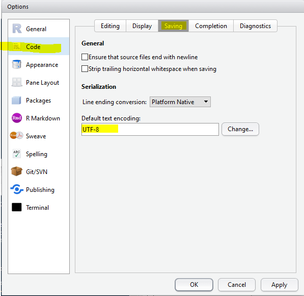
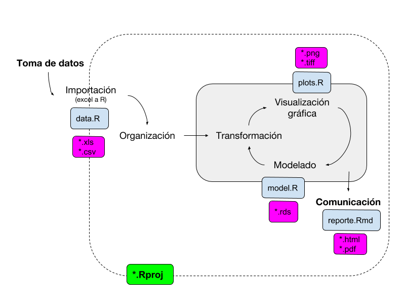

1 Introducción
1.2 Configuraciones básicas del RStudio



1.3 Instalación de paquetes
Existen varias vias de instalación de paquetes:

- Via CRAN (Comprehensive R Archive Network):
install.packages("nombre_del_paquete")O simplemente en el panel de paquetes.
- Paquetes no oficiales via Github:
devtools::install_github("rstudio/epiphy")
library(nombre-del-paquete)
1.4 Configuración de la sesión
Varios tipos de archivos serán creados y usados durante una sesión de R:
- datos crudos (hojas de cálculo) - datos manipulados
- scripts
- gráficos
- reportes de resultados
Una sesión de análisis debe poder ser retomada en cualquier momento pudiendo darse por concluída cuando el trabajo es publicado. Hasta entonces debemos tener rápido acceso a todos los objetos creados en sesiones anteriores. Para ello debemos manejarnos siempre bajo buenas prácticas de trabajo. Esto nos permitirá entender que quisimos hacer tiempo atrás, seremos intuitivos para encontrar archivos/objetos, y finalmente crearemos trabajos reproducibles…
Una forma práctica de administrar todos los objetos que una sesión es crear un proyecto de R para cada sesión.

Una sugerencia es generar subcarpetas en nuestras máquinas, en preferencia dentro de dropbox / google drive. Esto no solo mantendrá nuestro trabajo resguardado de posibles pérdidas (backup), retomarlo desde diferentes maquinas (trabajo/casa), sino que también le permitirá compartir en tiempo real sus avances con los colaboradores de su trabajo.

Crear una carpeta Intro_R en sus máquinas
Crear una nuevo proyecto “Intro_R.Rproj”
Crear un script “1_intro”
Donde se guardaria el siguiente gráfico?
Una vez instalado, hay que cargar los paquetes que contienen las funciones que vayamos a usar en cada sesión